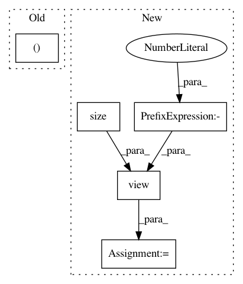

943753c968fe7c0cbafc6e44d60f1b28b42e997b,torchsample/utils.py,,th_nearest_interp2d,#,114
Before Change
// take clamp of coords so they"re in the image bounds
coords[:,0] = torch.clamp(coords[:,0], 0, input.size(1)-1).round()
coords[:,1] = torch.clamp(coords[:,1], 0, input.size(2)-1).round()
stride = torch.LongTensor(input.stride())[1:].float()
idx = coords.mv(stride).long()
After Change
x_ix = x.mul(stride[1]).long()
y_ix = y.mul(stride[2]).long()
input_flat = input.view(input.size(0),-1).contiguous()
mapped_vals = input_flat.gather(1, x_ix.add(y_ix))
return mapped_vals.view_as(input)
In pattern: SUPERPATTERN
Frequency: 3
Non-data size: 5
Instances
Project Name: ncullen93/torchsample
Commit Name: 943753c968fe7c0cbafc6e44d60f1b28b42e997b
Time: 2017-05-03
Author: ncullen.th@dartmouth.edu
File Name: torchsample/utils.py
Class Name:
Method Name: th_nearest_interp2d
Project Name: eriklindernoren/PyTorch-GAN
Commit Name: a4697d7e45e66a3264eb56dcf489d67d4df40d23
Time: 2018-04-23
Author: eriklindernoren@gmail.com
File Name: implementations/cgan/cgan.py
Class Name: Discriminator
Method Name: forward
Project Name: PIQuIL/QuCumber
Commit Name: 7263cde9026f78a71917b8b1d5f8e43bbc6c8458
Time: 2019-06-05
Author: emerali@users.noreply.github.com
File Name: qucumber/rbm/binary_rbm.py
Class Name: BinaryRBM
Method Name: effective_energy_gradient